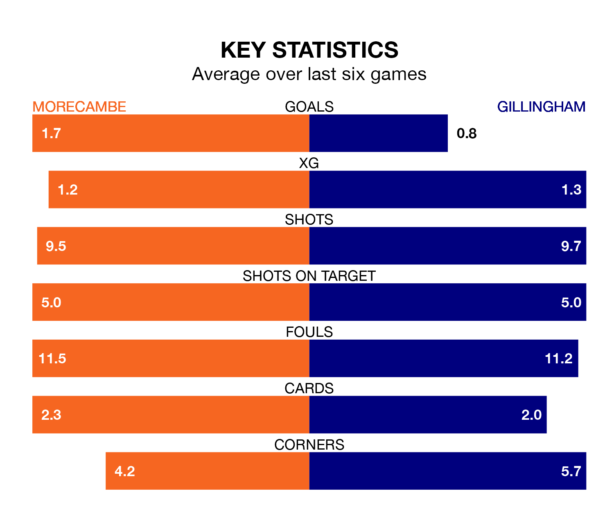

Morecambe welcome Gillingham to the Mazuma Stadium on Saturday looking to pick up points to end their three-game losing streak.
Morecambe's struggles have left them with seven points from their last six EFL League Two matches, while their opponents have earned eight from a possible 18.
With 36 goals in 39 games so far this season, Gillingham are the league's lowest scorers with 0.9 goals per game. But they are conceding fewer than average too, letting in 45 goals at a rate of 1.2 per game.
Morecambe, meanwhile, are average scorers, with 1.5 goals per game. They have conceded 1.7 goals per game.
In Jake Turner, the Gills can rely on one of the league's safest pair of hands. He has kept 11 clean sheets in his 33 appearances this season in EFL League Two.
In the Shrimps's net, Stuart Moore has three clean sheets in 12 games. He has conceded a goal every 74 minutes, 10% more often than the 78 minutes between goals for Turner.
In the last three years, Morecambe and Gillingham have played each other on three occasions. Gillingham won two of them and they drew once.
Their last meeting was on September 16, when Gillingham won 2-1 at home.
The visitors are 10th in the table after 39 games, of which they have won 16 and drawn eight, earning 56 points.
The home side are two places behind Gillingham in 12th, with 15 wins and nine draws putting them on 54 points.
Morecambe's last match was on Sunday, a 3-1 loss against Salford City, with Theo Vassell getting the goal for the Shrimps.
Gillingham drew 1-1 with Grimsby Town last time out, on March 16, with George Lapslie on the scoresheet.
Saturday's match will be refereed by Paul Howard, who has taken charge of 13 EFL League Two games so far this season, issuing one red card and booking 38 players. He has awarded one penalty.
The last Morecambe game Howard refereed was a 1-0 home win against Tranmere Rovers on October 24. His last Gillingham match was their 3-1 win at home against Salford City on November 18.
Updated: 10:19 (UTC), 22/03/24